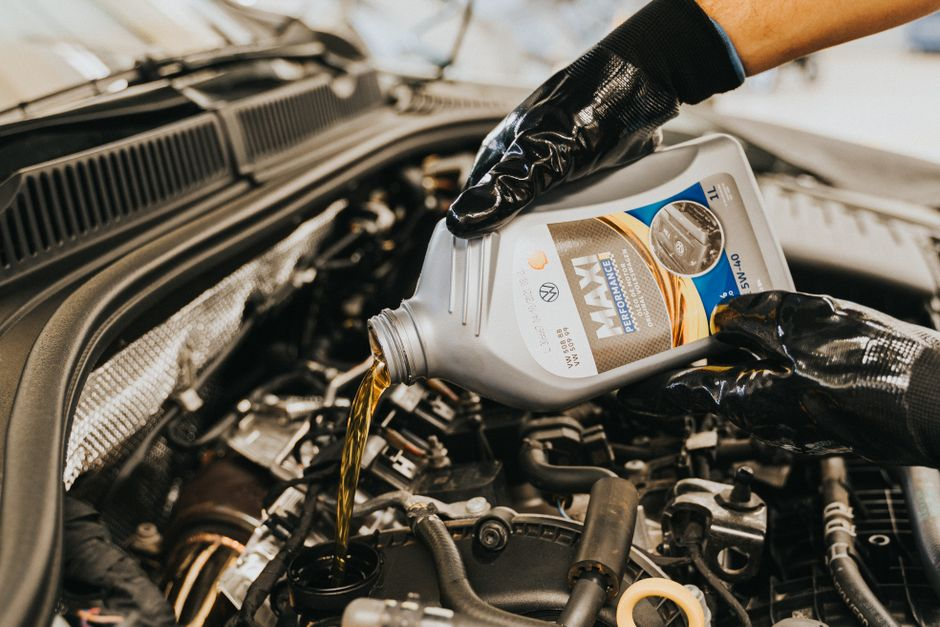

How to Clean and Lubricate Your Wipers Correctly

Photo: Andrea Piacquadio / Pexels
Ensuring your wiper blades (essuie-glaces) are clean and well-lubricated is crucial for maintaining clear visibility on the road, especially in bad weather. This blog post will guide you through the process with step-by-step instructions, helping you keep your wipers in top condition.
Why Regular Maintenance is Important
Dirty or worn wiper blades can lead to streaks, smears, and poor visibility, which can be dangerous, especially during heavy rain or snow. By following these steps, you can significantly reduce the risk of these issues.
Tools and Materials Needed
- A squeegee or plastic card (credit card)
- Water or a mixture of water and white vinegar
- Wiper blade lubricant (specifically designed for this purpose)
- Clean, soft cloths
Step-by-Step Guide

Photo: Daniel Andraski / Pexels
Step 1: Clean the Wipers
- Remove the Wipers: Lift the wiper arms and carefully slide the blades off the rubber arms. Place them on a clean, flat surface.
- Inspect the Blades: Check for any debris or build-up. Use a squeegee or plastic card to gently clean the rubber part of the blade. Avoid using a metal object as it could damage the blade.
- Wipe Down the Arm: Clean the wiper arm with a soft cloth dampened with water or a vinegar-water solution. Ensure there is no dirt or grime that could transfer back to the blades.
Step 2: Lubricate the Wipers
- Apply Lubricant: Use a small amount of wiper blade lubricant to coat the rubber part of the blade. A pea-sized amount should be sufficient.
- Spread Evenly: Use a clean cloth to spread the lubricant evenly across the blade. This will help reduce friction and wear.
- Allow to Dry: Let the lubricant dry naturally. This process should take about 5 minutes.
Step 3: Install the Wipers
- Check for Dryness: Ensure the lubricant is fully dry before installing the blades. Any leftover moisture could interfere with the blade’s function.
- Slide the Blade Back: Carefully slide the blade back onto the rubber arm, making sure it is properly seated.
- Test the Wipers: Lower the wiper arm and test the blade by turning on your wipers. Ensure they move smoothly and do not make any squeaking or rubbing noises.
Example Scenario
Imagine you’re driving home on a rainy night. Suddenly, you notice streaks and smears on your windshield, making it hard to see. By following the steps above, you can quickly clean and lubricate your wipers. Start by removing the blades and cleaning them with a squeegee and water. Then, apply a small amount of lubricant and spread it evenly. Reinstall the blades and test them on your wipers. As a result, you’ll have clear visibility, ensuring a safer journey home.
Additional Tips
- Frequency: Clean and lubricate your wipers at least once a month, or more frequently if you live in an area with heavy precipitation.
- Storage: When not in use, store your wipers vertically in a dry place to prevent warping and ensure they stay clean.
By following these detailed steps, you can keep your wipers in optimal condition, ensuring clear visibility and a safer driving experience.
Recommended products
As an Amazon Associate, I earn from qualifying purchases.